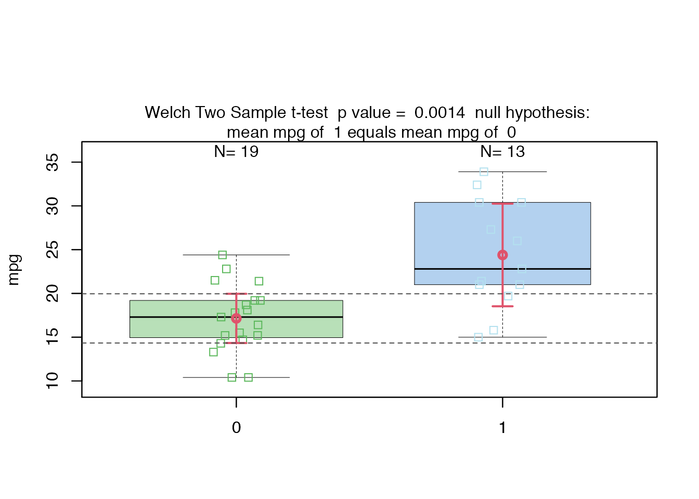
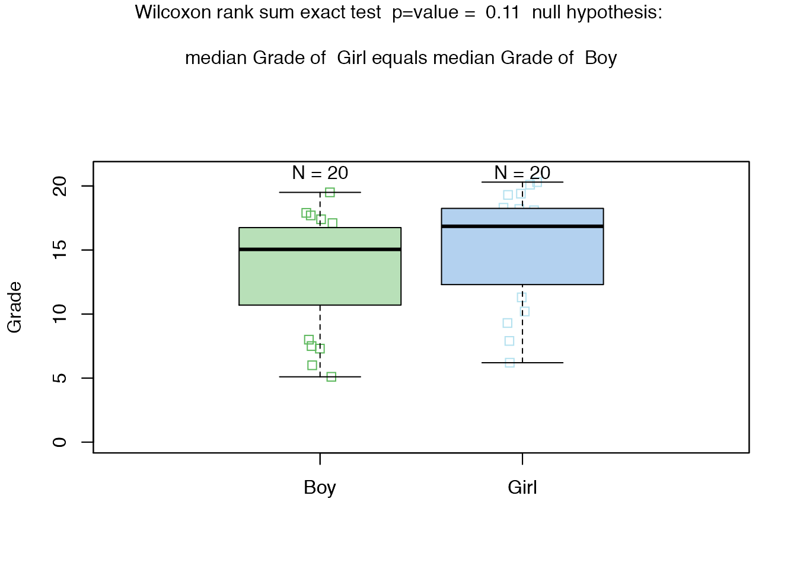
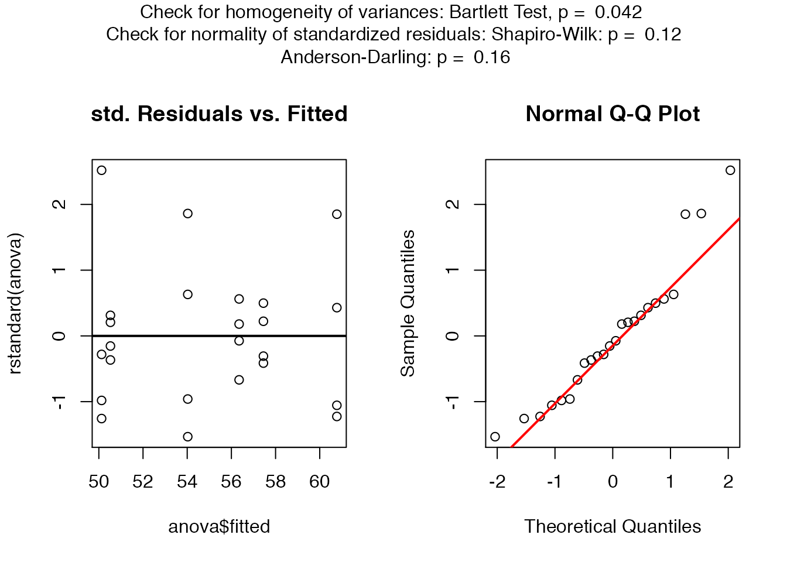
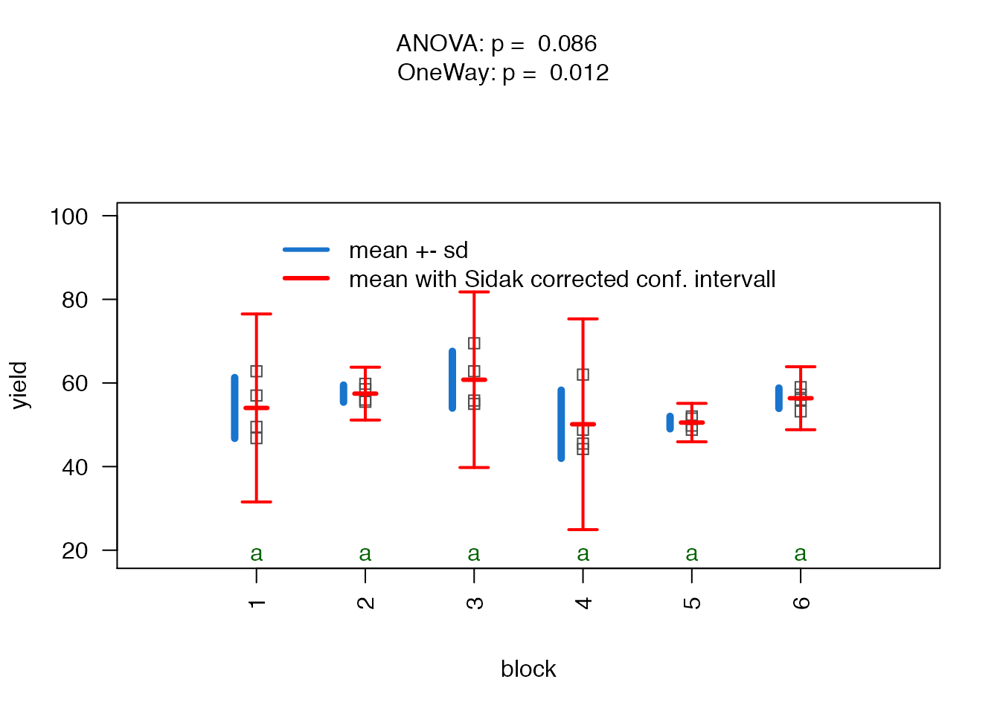
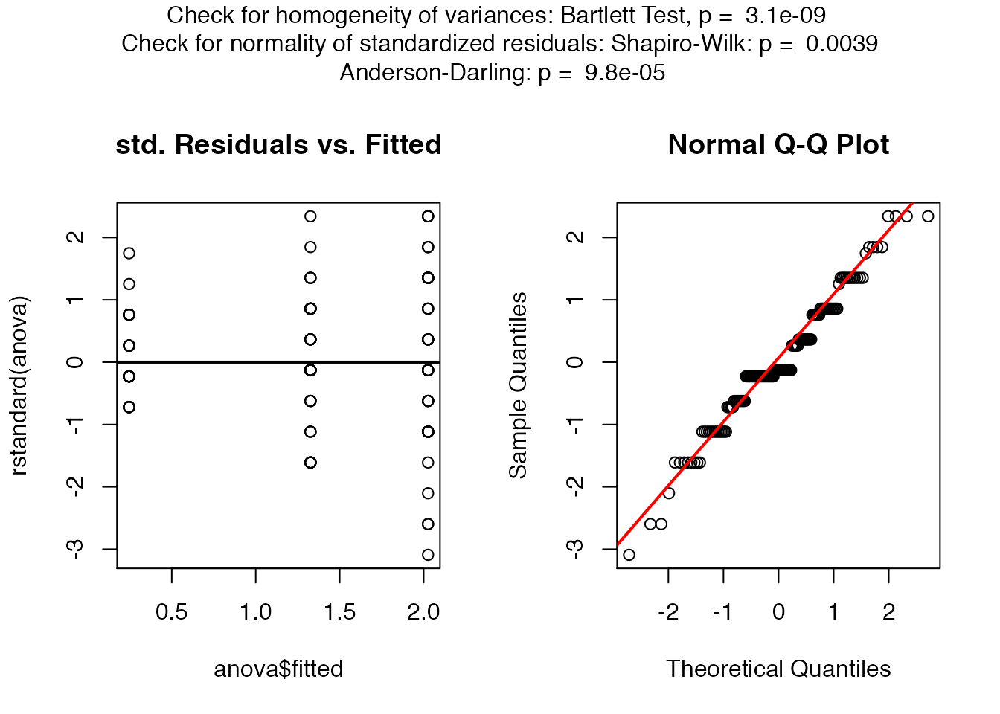
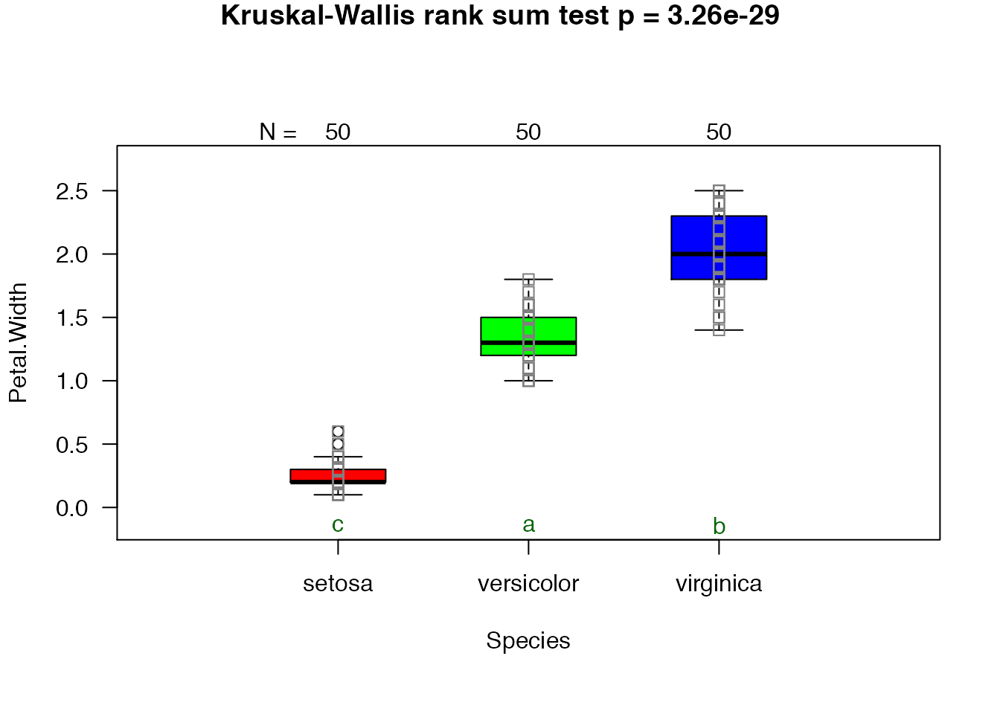

visStatistics-vignette.Rmd
library(visStatistics)Statistical consulting requires often both a quick first visualization and a reproducible statistical analysis of the presented raw data. The R package visStatistics with its core function visstat() fulfils this need. Based on a decision tree it picks the statistical hypothesis test with the highest statistical power between the dependent variable (response) varsample and the independent variable (feature) varfactor. The corresponding test statistics including eventual post-hoc-analysis are returned and a graph showing key statistics of the underlying test is generated. This fully automated workflow is especially suited for browser based interfaces to server-based deployments of R and has been successfully implemented to analyse medical raw data in an unbiased fashion.
The statistical tests performed by the core function visstat depend on the type of the data (numerical/integer or categorical), the number of levels whilst dealing with categorical data and the data distributions. The reminder of this vignette documents in detail the algorithm underlying the decision tree of vistat.
If the feature varfactor has two or more levels and the response varsample is of type numerical or integer, tests to compare the means or medians of the sample are applied. The used confidence levels conf.level defaults to 0.95, but can be adapted in the function call to visstat().
If the feature varfactor has two levels and the response varsample is of type numerical or integer, either an analysis of variance model fit aov () and oneway()
The choice of both options follows the following algorithm:
If the sample size of both samples is bigger than 100, the function visstat() performs always Welch’s t-Test (t.test()) (Lumley et al. 2002 ).
The graphical representation names the used test, the underlying null hypothesis with the associated p-value of the null hypothesis. A box plot with an overlayed jitter plot showing each data point is generated. The number of data entry of each sample is displayed above each box. The means and confidence intervals are displayed in red. The confidence intervals are corrected for the familywise error rate in pairwise comparison by the Sidak method (Šidák 1967) (see section @ref(aov)).
The test statistics of the Shapiro-Wilk test on the standardized residuals as well of Welch’s t-test are returned as a list.
If the sample size of one of the samples is smaller than 100, viststat() checks for the normality of the standardized residuals of both samples with the Shapiro-Wilk Normality Test (shapiro.test()). If the normality assumption is met, Welch’s t-Test is performed, otherwise the Wilcoxon rank sum test. The detailed algorithm is:
If the p-values of the standardized residuals of both distributions in the shapiro.test() are bigger than the error probability 1-conf.level, Welch’s t-Test (t.test()) is executed. Otherwise,
if the p-values of the standardized residuals of both distributions in the shapiro.test() are smaller than the error probability 1-conf.level, a Wilcoxon rank sum test (wilcox.test()) is executed.
The graphical representation is analogue to Welch’s t-test omiting mean and confidence interval. The test statistics of the Wilcoxon rank sum test as well as the summary statistics of the generated boxplots is generated and returned as a list.
# uncomenting the next line prints out test statistics
# ttestStatistics
#Increasing the confidence level
ttestStatistics=visstat(mtcars,"mpg","am",conf.level=0.99) 
grades_gender <- data.frame(
Sex = as.factor(c(rep("Girl", 20), rep("Boy", 20))),
Grade = c(19.3, 18.1, 15.2, 18.3, 7.9, 6.2, 19.4,
20.3, 9.3, 11.3, 18.2,17.5,10.2,20.1,13.3,17.2,15.1,16.2,17.3,
16.5, 5.1, 15.3, 17.1, 14.8, 15.4, 14.4, 7.5, 15.5, 6.0,17.4,
7.3, 14.3,13.5,8.0,19.5,13.4,17.9,17.7,16.4,15.6))
wilcoxonStatistics=visstat(grades_gender,"Grade", "Sex")
If the feature varfactor has more than two levels and the response varsample is of type numerical or integer, the function vis_anova_asumptions() is automatically called. It checks for the normality of the standardised residuals of the analysis of variance (ANOVA) fit generated by the function aov() . To do so it applies, both the Shapiro-Wilk-test shapiro.test() and the Anderson-Darling-Test ad.test() on the standarized residuals. Furthermore the data is graphically analysed by plotting the standardized residuals versus the fitted mean values of the linear model for each level of varfactor. Additionally the normal QQ plot of the standardized residuals is generated.
Homoscedacity is tested with the bartlett.test(). It performs Bartlett’s test of the null hypothesis that the variances in each of the levels are the same.
If the p-values of the standardized residuals calculated by shapiro.test() or ad.test() are bigger than the error probability 1-conf.level,aov() and oneway.test() are executed and the corresponding p-values displayed. Both aov() and oneway.test() check, whether two or more samples from normal distributions have the same mean. Whereas aov() requires homogenity of variances in each level (group), the oneway.test() does not assume that the variances in each group are necessarily equal.
Depending on the p-value of the bartlett.test() the appropriate test has to be chosen by the user:
* If the p-value of the bartlett.test() is bigger than 1-conf.level, we can assume homogenity of variances in each level (group) and use p-values and further output generated by aov().
* Otherwise homoscedacity can not be assumed and the output of `oneway.test()` should be referred to. The generated graphs shows in blue the mean plus/minus the standard devation ofo each group. To generate the Sidak corrected confidence intervals in red, we entered the applied corrected probability of error for the comparison of \(M\) groups, \(\alpha_{Sidak}=1-\)conf.int\(^{1/M}\), (Šidák 1967) in the standard formula for confidence intervals \[ \left[{{\overline {x}}-t_{\left(1-{\frac {\alpha_{Sidak} }{2}};n-1\right)}{\frac {s}{\sqrt {n}}}\ ;\ {\overline {x}}+t_{\left(1-{\frac {\alpha_{Sidak} }{2}};n-1\right)}{\frac {s}{\sqrt {n}}}}\right],
\] where \(\overline {x}\) is the mean,\(s\) the standard devaiation and \(n\) the number of entries of each group (level).
We use the Tukey Honest Significant Differences TukeyHSD() to create a set of confidence intervals on the differences between the means of the levels of a factor with the specified family-wise probability conf.level. This list of confidence intervals accompanied by the adjusted p-values is returned as “adjusted_p_values_t_test” by visstat(). If the difference between two levels is significant at the given conf.level, the displayed letters, generated with multcompLetters() , at the bottom of the graph between the two levels will differ.
If the p-values of the standardized residuals calculated by shapiro.test() or ad.test() are smaller than the error probability 1-conf.level, a normal distribution of the residuals can not be assumed. In this case, visstat() chooses a non-parametric alternative, the Kruskal-Wallis rank sum test. kruskal.test() tests the null that the medians are the same in each group (level). As post-hoc-analysis the pairwise.wilcox.test() applying the default Holm method (Holm 1979) is used. If two groups differ significantly at the given conf.level, the green letters below the box plot differ. Otherwise the graphical representation of the Kruskal-Wallis test is analogue to the above described Wilcoxon rank sum test. A list wtih the test statistics of the Kruskal-Wallis rank sum test as well as the p-values of the pairwise comparisons adjusted by the Holm method is returned.
anova_npk=visstat(npk,"yield","block")
# uncomment the following line to display the full list which is generated
#anova_npkIn the above example the scatter plots of the standardized residuals, the QQ -plot and the p-values of both Shapiro-Wilk-test and Anderson-Darling tests are greater than the probability of error \(\alpha=0.05\). Therefore we can assume that the residuals are normally distributed and visstat excecutes in the following graph both aov() and oneway.test(). At the given confidence level the homogeneity of variances can not be assumed (\(p <\alpha\) as calculated with the bartlett.test()), and the user should report the p-value of the oneway.test().
visstat(iris,"Petal.Width", "Species") In the above example the scatter plots of the standardized residuals, the QQ -plot and the p-values of both Shapiro-Wilk-test and Anderson-Darling test smaller than the probability of error \(\alpha=0.05\) suggest that we can not assume that the residuals are normally distributed. Therefore visstat switches to the non parametric alternative kruskal.test().
lm(), t.test(), wilcox.test(), aov(), kruskal.test(), fisher.test(), chisqu.test()
shapiro.test() and ad.test()
##Implemented post-hoc tests TukeyHSD() for aov()and pairwise.wilcox.test() for kruskal.test().
For the test of independence of count data, Cochran's rule (Cochran (1954) <doi:10.2307/3001666>) is implemented:
If more than 20 percent of all cells have a count smaller than 5, fisher.test() is performed and displayed,
otherwise chisqu.test(). In both cases case an additional mosaic plot is generated.